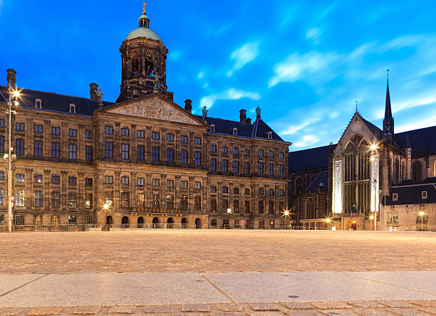
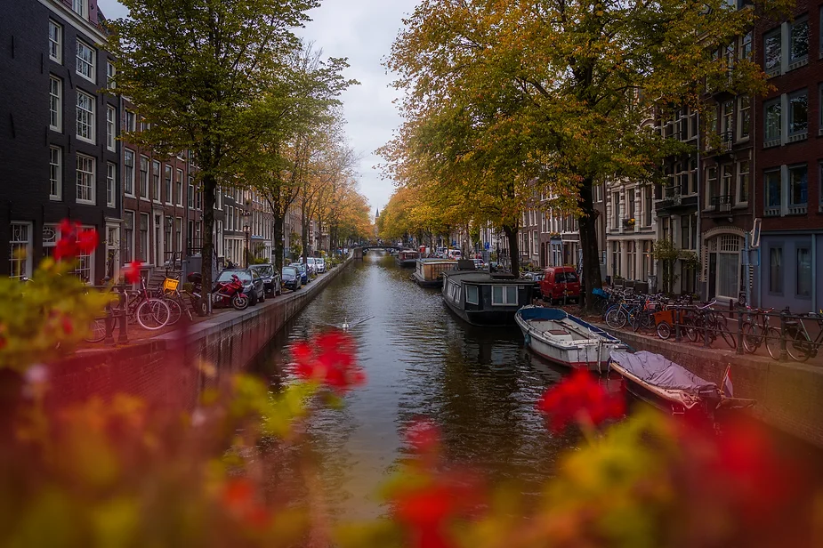

DutchDestinations
A tour through Amsterdam
A tour through Amsterdam
niks

Welcome to the ultimate Amsterdam adventure! Our self-guided online tour takes you on a journey through the canals, historic streets, and vibrant culture of this iconic European city. No need to stick to a rigid schedule or follow a physical tour guide. With our mobile-friendly tour, you have the freedom to explore at your own pace while learning about Amsterdam's rich history, art, and hidden gems.
One of the greatest advantages of our self-guided Amsterdam tour is the ability to tailor your journey to your interests and preferences. With our interactive app, you can choose your own destinations and select the specific buildings, museums, and activities that pique your curiosity.
In Amsterdam, the possibilities are endless, and our self-guided tour empowers you to create a truly personalized experience. Whether you're an art enthusiast, history buff, foodie, or simply an explorer at heart, you can craft an itinerary that caters to your unique interests. With our app as your guide, you'll not only follow the best and fastest route but also uncover hidden treasures and experiences that you might have otherwise missed. Amsterdam is your canvas – paint your adventure!

Get Started on Your Amsterdam Adventure
Don't wait any longer; your Amsterdam adventure begins with a tap on your phone. Embrace the flexibility and independence of our self-guided tour. The city's beauty, history, and culture await your exploration. So, grab your smartphone, put on your comfortable shoes, and set off on your very own Amsterdam adventure. Amsterdam is yours to discover!